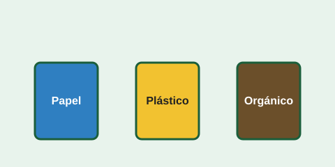

EcoPortoviejo: aprende a reciclar en tu ciudad

Reciclar empieza en casa. Esta guía te explica cómo separar tus residuos en papel, plástico y orgánicos para que lleguen al lugar correcto.
¿Por qué reciclar?
Cada tonelada de papel reciclado evita talar árboles y reduce la basura que llega al relleno sanitario.